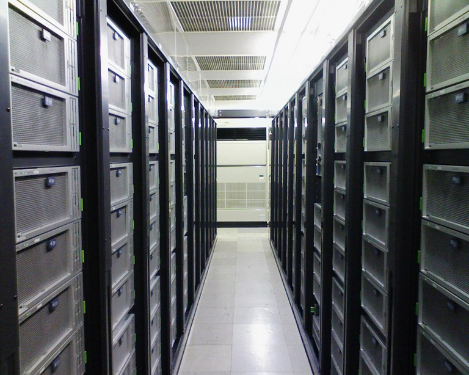
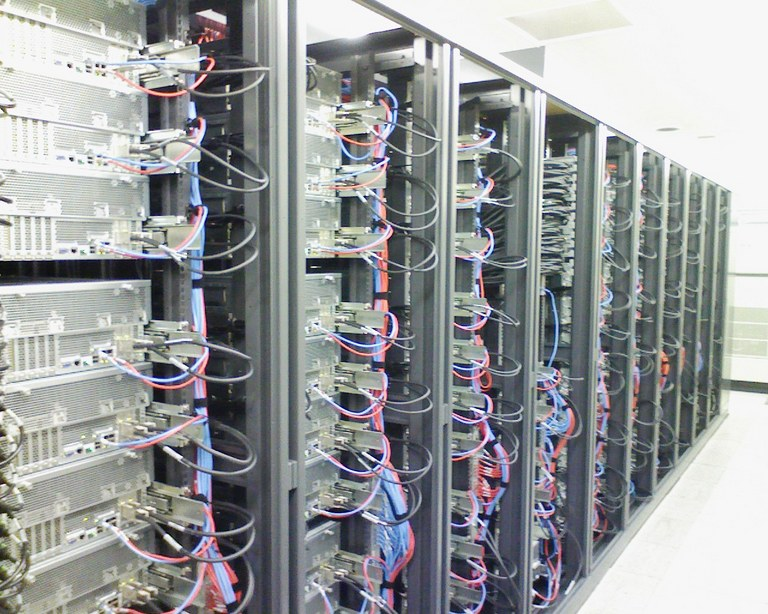
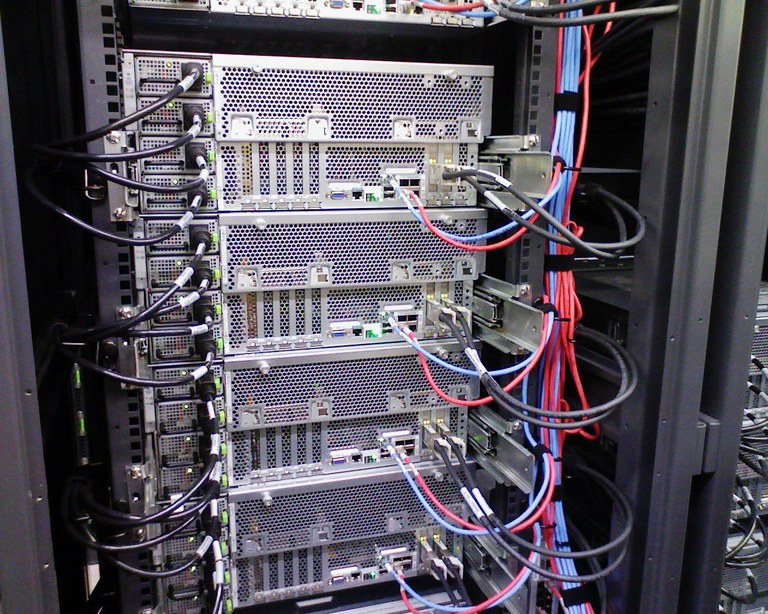
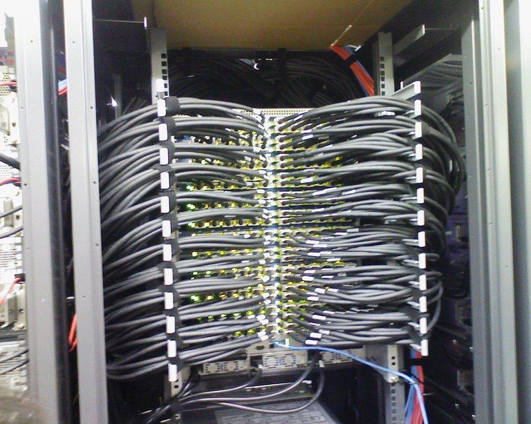
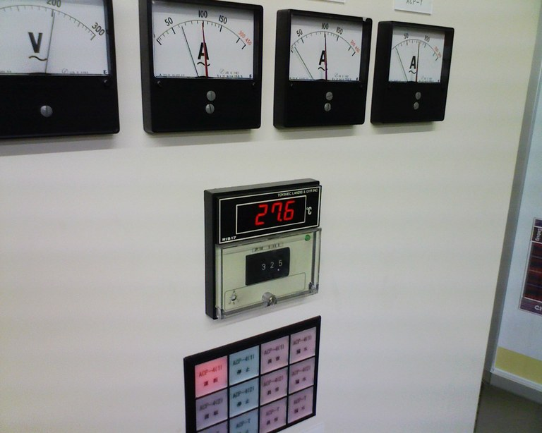

TSUBAME見学記
東京工業大学 学術国際情報センター 西川武志 特任准教授のご厚意により、
第338回PTT終了後に参加者全員でTSUBAMEを見学させていただきました。
そのときに撮った写真を載せておきます。
- 正面側通路：冷房の風はこの通路に集中して供給されます。

- 背面側通路：背面側には熱風が出てきます。

- 背面側拡大：右端の2本がInfiniBandです。

- InfiniBandの集線装置：各ノードのInfiniBandが集まっています。

- サーバ室の温度計：冷風を正面側通路に集中させるため、他はサーバ室とは思えない高温になっていました。
